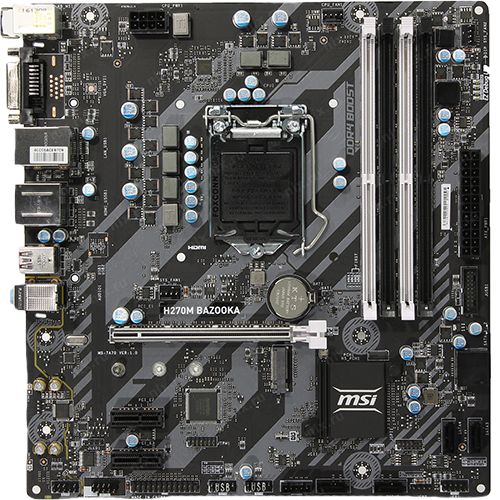
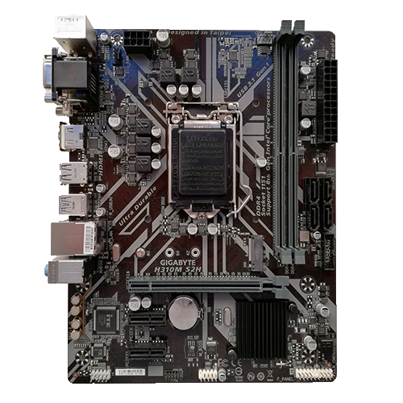

Материнская (систе́мная) пла́та (англ. motherboard, в просторечии: «материнка», «мать») — печатная плата, являющаяся основой построения модульного устройства, например — компьютера.
Системная плата содержит основную часть устройства, процессор, оперативную память и дополнительные взаимозаменяемые платы, называемые платами расширений.
Обычные компоненты материнской платы компьютера
В качестве основных (несъёмных) частей материнская плата имеет:
разъём процессора (ЦПУ),
разъёмы оперативной памяти (ОЗУ),
микросхемы чипсета (подробнее см. северный мост, южный мост),
загрузочное ПЗУ,
контроллеры шин и их слоты расширения,
контроллеры и интерфейсы периферийных устройств.
Материнская плата с сопряженными устройствами монтируется внутри корпуса с блоком питания и системой охлаждения, формируя в совокупности системный блок компьютера.
Классификация материнских плат по форм-фактору. Форм-фактор материнской платы — стандарт, определяющий размеры материнской платы для компьютера, места её крепления к шасси; расположение на ней интерфейсов шин, портов ввода-вывода, разъёма процессора, слотов для оперативной памяти, а также тип разъема для подключения блока питания. Форм-фактор (как и любые другие стандарты) носит рекомендательный характер. Спецификация форм-фактора определяет обязательные и опциональные компоненты. Однако подавляющее большинство производителей предпочитают соблюдать спецификацию, поскольку ценой соответствия существующим стандартам является совместимость материнской платы и стандартизированного оборудования (периферии, карт расширения) других производителей (что имеет ключевое значение для снижения стоимости владения, англ. TCO).
Устаревшими являются форматы: Baby-AT; полноразмерная плата AT; LPX; BTX, MicroBTX и PicoBTX.
Современные и массово применяемые форматы: ATX; microATX; Mini-ITX.
Существуют материнские платы, не соответствующие никаким из существующих форм-факторов (см. таблицу). Это принципиальное решение производителя, обусловленное желанием создать на рынке несовместимый с существующими продуктами «бренд» (Apple, Commodore, Silicon Graphics, Hewlett-Packard, Compaq чаще других игнорировали стандарты) и эксклюзивно производить к нему периферийные устройства и аксессуары. Предназначение компьютера (бизнес, персональный, игровой) в значительной степени влияют на выбор поставщика материнской платы.
Для нужд SOHO или предприятия выгоднее приобретение готового компьютера (или решения, например, «клиент-сервер» или блейд-сервер с закупкой или лизингом готового решения).
Для персонального пользования в качестве основного устройства позиционируется портативный компьютер[почему?][источник не указан 2279 дней]. Материнские платы ноутбуков существенно отличаются от материнских плат настольных компьютеров: для сокращения габаритов компьютера в плату оригинальной схемотехники встраивается (интегрируется) множество отдельных периферийных плат (например, встраивается видеокарта) — это обеспечивает компактные габариты и низкое энергопотребление ноутбука, но приводит к меньшей надёжности, проблемам с теплоотводом, значительному увеличению стоимости материнских плат, а также отсутствию взаимозаменяемости.
Таким образом, покупка отдельной материнской платы обоснована созданием компьютера «особой» конфигурации, например, малошумного или игрового.

Мат.палат

Мат.плата
<>
Видеоматериал:
Технологии энергосбережения
Повышенное внимание к «зеленым» технологиям, требующим энергосберегающих и экологически безопасных решений, и обеспечение важных для материнских плат характеристик, вынудило многие компании-производители разрабатывать различные решения в этой области. С постоянным увеличением популярности электронных приборов на протяжении ближайших 20—30 лет Евросоюз решил ввести эффективную стратегию для решения вопросов энергопотребления. Для этого были выпущены требования по энергоэффективности — ErP (Energy-related Products) и EuP (Energy Using Product). Стандарт разработан для определения энергопотребления готовых систем. По требованию ErP/EuP, система в выключенном состоянии должна потреблять менее 1 Вт мощности. Спецификации ErP/EuP 2.0 намного строже первой версии. Для соответствия ErP/EuP 2.0 (вступила в действие в 2013 году) полное энергопотребление компьютера в выключенном состоянии не должно превышать 0,5 Вт.
EPU Engine
Ultra Durable (версии 1, 2 и 3) — технология от Gigabyte[1], призванная улучшить температурный режим и надежность работы материнской платы, которая подразумевает:
Увеличенная (удвоенная) толщина медных слоев толщиной 70 мкм (2 унции/фут²) как для слоя питания, так и для слоя заземления системной платы снижает полное сопротивление платы на 50 %, что обеспечивает снижение рабочей температуры компьютера, повышение энергоэффективти и улучшение стабильности работы системы в условиях разгона.
Использование полевых транзисторов, обладающих пониженным сопротивлением в открытом состоянии (RDS(on)). Транзисторы преобразователей питания +12 вольт выделяют относительно много тепла и, когда говорят об охлаждении подсистемы питания процессора, то подразумевают именно их.
Использование дросселей с ферритовым сердечником — эти дроссели обеспечивают меньшие потери энергии и меньший уровень электромагнитного излучения.[2]
Использование бессвинцового припоя.
Повторное использование и картона и пластика упаковки.